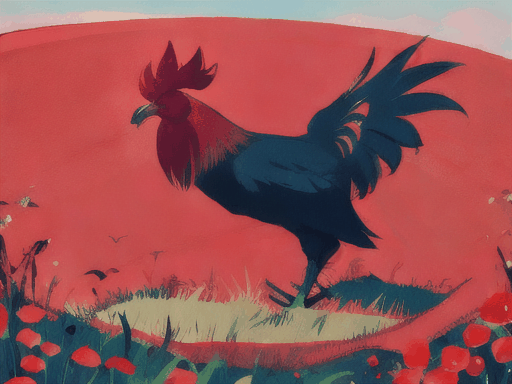

The Generate Video feature in AiCasso lets you create videos by simply describing what you want to see. Just type out your idea, and AiCasso will bring it to life in a video!
How It Works:
Prompt:
"A 3D animated rooster in a field all by itself, eating and being happy. Make it a portrait video with 50 denoising steps."
Result:
Prompt:
"A cartoon of a rooster on a field in landscape dimensions."
Result:

Prompt:
"A rooster on a field."
Result:
Prompt:
"A rooster that is in the field all by itself. Give it a natural feel."
Result:
Additional Options
Want to fine-tune your video? Here are some settings you can play around with:
Number of Frames: Choose how many frames (individual images) your video will have. You can go up to 25 frames, with 16 as the default.
Number of Denoising Steps: This controls how smooth your video looks. More steps mean smoother videos. You can set up to 50 steps, with 20 as the default.
Guidance Scale: This helps the video stick closely to your description. The higher the number, the more it follows your prompt. The range is 0 to 8, with 8 being the default.
Clip Skip: Skip certain layers for a different video style. By default, no layers are skipped, but you can skip up to 2.
Upscale Width and Height: You can make your video larger by adjusting the resolution. The default is 1024x1024 pixels, but you can tweak this to fit your needs.
Upscale Strength: This changes how much your video adjusts when upscaled. The default is 1, but you can adjust it to see more differences.
Upscale Guidance Scale: This guides the upscaling process, with a range from 0 to 8, and a default of 8.
Upscale Inference Steps: The number of steps taken to upscale the video. More steps make for smoother upscaling, with a maximum of 50 and a default of 20.
Improved Sampling: Want a more refined video? Turn this on. It's off by default.
Improved Sampling Seed: Use this to generate the same video every time with improved sampling. It's optional and off by default.
Frames per Second (FPS): Set the speed of your video. The default is 16 FPS, but you can adjust it up to 16.
Video Model: Choose the style of your video. Options include:
Default: A standard video model.
Cartoon: A cartoonish video style.
Natural: A realistic, natural-looking video style.
Animated 3D: A 3D animated video style.
Remember, these settings are optional. The Generate Video feature works great with just a simple description, so feel free to experiment and see what you can create!